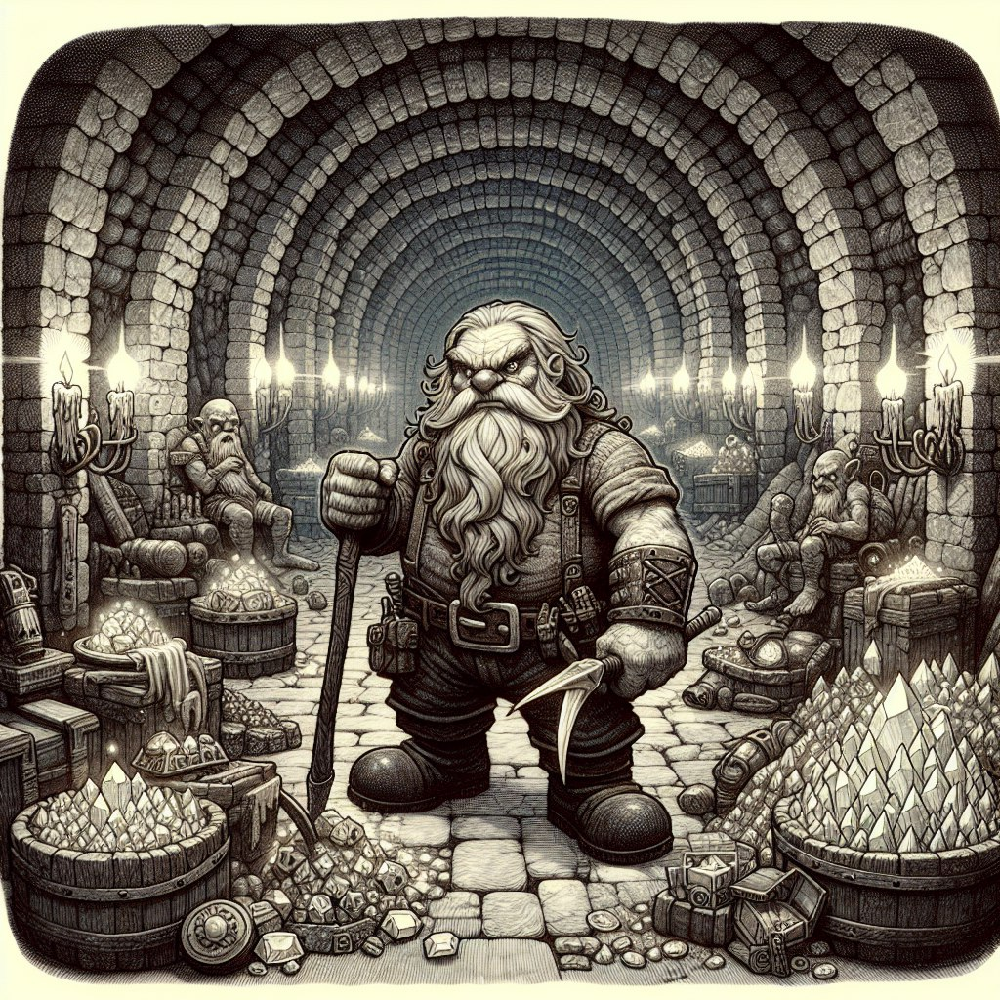

В этой короткой статье, я расскажу что вас ожидает в подземелье гномов, где оно находится, с чем предстоит столкнуться и зачем оно нужно
Подземелье гномов находиться по координатам 159 54, добраться проще всего добежав до локации с особняком вампиров и идти вправо, при спуске в локацию вниз нас ожидают, стаи пепельных волков, горные грифоны, черные медведи, но, к счастью, будет всего 5 шагов по сложной местности.
- Тут можно найти Чертежи Оружий ВК и магистра
- Тут проход в долину где можно фармить вулканит, есть кусок лора игры, заклинания ангел хранитель и великое помешательство, яйцо раптора. и несколько рун, янтарный уголь
- Тут лежит второй янтарный уголь.
- Тут можно выбить из големов шестеренки для квеста с големом.
подземелье разделено на комнаты их 9 штук. представляют собой квадраты 37 на 37
все карты что у меня есть вот https://docs.google.com/spreadsheets/d/1_86SgfKUlgube7ckmhulbPn3hOGHaKMnMvwSI2fvNOA/edit#gid=1846106019
тут есть все что нужно
тут есть комнаты 7 и 8 полностью
также внизу статьи приложу файлы карты для расширения
комната 1 начальная, она же самая простая,
можно встретить Полуночный охотник(1) [66][?]Тень смерти(2) [70][?]Рыцарь тьмы(3) [43][?]Око бездны(1) [67][?]Хозяин глубин(1) [66][?]
в ней находиться портал в комнату 7 который спрятан за барьером который можно снять нажав кнопку в комнате 6. после нажатия трех рычагов можно перейти в комнату 2. либо если нажата кнопка в комнате 6 без нажатия рычагов можно идти в комнату 7 через портал
комната 2 боты немного сложнее но ничего особенного
можно встретить Око бездны(1) [88][?]Тень забвения(2) [70][?]Око бездны(1) [94][?]Хозяин глубин(2) [70][?] [?]Тень смерти(4) [73][?]
интересна нам тем что тут за барьером лежит сундук с оружием вк и магистра ( можно вытащить 1 свиток на выбор, либо шансом 1-2 случайных) для снятия барьера нужно нажать кнопку в комнате 5. из комнаты 2 доступны переход в комнату 3 после нажатия рычага и переход в комнату 4 без нажатия рычага.
комната 3 тут появляются големы
можно встретить Тень забвения(1) [72][?]Хозяин глубин(2) [72][?]Тень смерти(3) [74][?]Полуночный охотник(4) [106][?]Бронзовый голем(5) [75][?]Вампир-лорд(1) [121][?]Око бездны(3) [99][?]Призрачный ужас(4) [109][?]
боты с собственной механикой. конкретно в этой комнате есть бронзовые големы которые при получение большой пачки урона используют абилку.
21:42:57 Воин света(1) : Простой удар >> Бронзовый голем(3), попал(97/22), нанесен урон: 11799(x2.3) [21896/38000](0), нанесена открытая рана 3835/30. Переход в аварийный режим!Включение: Резонирующие удары к их урону добавляется бонусный, который зависит от брони цели. комната нам не интересна, она проходная, отсюда можно попасть в комнату 5, в комнату 6 и сюда можно перейти из комнаты 9
Комната 4 не знаю какие там боты, никогда туда не ходил. сюда можно попасть из комнаты 2 и отсюда можно пойти в комнату 6 из интересного тут есть сундук с черными эликами на броню и сопру
Команата 5
можем повстречать Око бездны(1) [164][?]Золотой голем(2) [80][?]Око бездны(3) [164][?]Тень смерти(4) [83][?]Бронзовый голем(1) [75][?]Железный голем(2) [78]]Золотой голем(4) [80][?к нашим бронзовым големам добавляются золотые и железные. золотые при получении крупной пачки урона используют такую абилку
21:53:30 Воин света(1) : Простой удар >> Золотой голем(2), попал(97/51), нанесен урон: 13304(x2.3) [32873/55300](0), нанесена открытая рана 4324/30. Переход в аварийный режим!Включение: Отражающий барьер после чего весь урон получает назад тот кто его наносит, броня поглощение урона не уменьшают его.) 21:53:32 Воин света(1) : Простой удар >> Золотой голем(2), попал(97/78), нанесен урон: 18884(x2.3) [13700/55300](0), получен урон: 18884 [247813/279939]
железные големы имеют
Воин света(1) : Простой удар >> Железный голем(2), попал(97/79), нанесен урон: 11096(x2.3) [36504/47600](2904), нанесена открытая рана 3606/30. Переход в аварийный режим!Включение: Поглощающий барьер
после чего любой удар наносит им не больше 1000 жизней. все големы могут бить цель во втором ряду сзади основной цели
из интересного в пятой комнате нас спустя 220 шагов по ней ждет кнопка которая снимет барьер во 2 комнате. можно перейти в комнату 9
Комната 6, все тоже самое что в комнате 5, есть кнопка которая откроет портал в комнату 7 из комнаты 1. сундук с неизвестным содержимым, скорее всего черные банки. можно перейти в комнату 4 и комнату 8
комната 7. боты как в комнате 3. попасть можно через портал из комнаты 1. из интересного тут сундук с янтарным углем для плавки. есть барьер который можно убрать кнопкой в комнате 9, открывает альтернитивный маршрут в долину, из информации полученной у аватара Антерос можно сделать вывод что маршрут дольше и сложнее основного.
комната 8 ничего о ней не знаю, и никто ничего о ней не знает. там есть какие-то секреты. как-то участвует в альтернативном маршруте попасть можно из комнаты 6 и комнаты 7
комната 9 тут нас ждут самые сложные големы, а именно мифрильные маги стихии, оч толстые, оч больно бьют, кастуют поглот и вообще плохие люди
в этой комнату можно попасть из комнаты 5 тут нас ждет кнопка которая снимает барьер в комнате 7, а самое важное дверь в долину, которая открывается рунным ключем из шпиля черной башни
собственно это все что мне известно о этой чудной локации, если у кого-то будет желание нормально написать эту нужную информацию сделайте это, а пока вы это не сделали, нужно получать информацию из этой статьи, потому что больше ее нет нигде(
ну и коротко как куда идти.
за оружием 1,2,3,5 там жмем кнопку и выходим в город. идем снова 1,2. берем в сундуке оружие
за углем 1.2.3.6. жмем кнопку, выходим в город в первой комнате через портал идем в 7, уголь там
в долину идем 1.2.3.5.9 и мы в долине